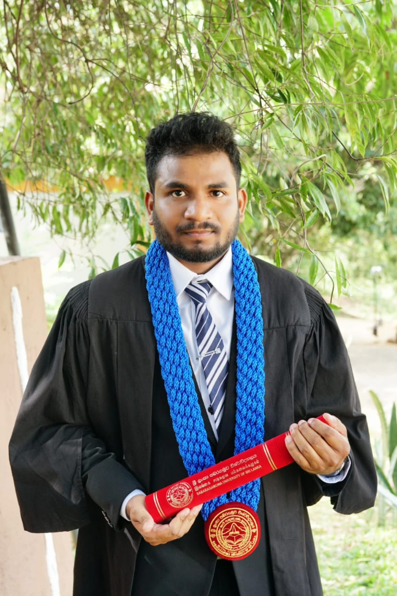

<div class="row align-items-center default-container">
  <div class="col-lg-8">
    <div class="content">
      <div class="content-left">
        <h2 class="default-topic">About me.</h2>
        <p class="default-p">
          I am Pradeep Kaliyawansha
          <span class="default-highlight">creating software out of an idea</span
          >.
        </p>
        <p>
          
        </p>

        <p class="default-p">
          A passionate software engineering with a B.Sc. (Hons) in Computing and
          Information Systems obtain with second class(lower division) from
          Sabaragamuwa University of Sri Lanka. I am driven by a desire to
          continuously learn new technologies and trends, and I thrive on
          applying them to real-world projects. With hands-on experience in
          full-stack development, I’ve worked on various projects across
          industries such as banking, insurance, and ERP systems.
        </p>
        <p class="default-p">
          Fast-forward to today, and so far I have had the privilege of working
          with fantastic people in the industry.
        </p>
        <p class="default-p">
          My technical expertise spans the MERN stack, Angular, Python, and
          other key frameworks. I have contributed to projects like an Online
          Parking Booking System and an Automated Attendance System, utilizing
          modern technologies such as ReactJS, MongoDB, OpenCV, and more.
          Additionally, I’ve interned as a Software Engineer, where I played a
          significant role in developing and testing software solutions using
          agile methodologies.
        </p>
        <p>
          
        </p>
        <p class="default-p">
          I’m always eager to explore new opportunities where I can utilize my
          skills and contribute to innovative solutions that impact both
          organizations and communities. In my spare time, I enjoy learning
          about DevOps, networking, and working on personal projects that
          sharpen my problem-solving skills.
        </p>
        <p class="default-p">
          I am continuously learning and adapting to new technologies and
          methodologies. My goal is to create efficient, scalable, and
          user-friendly
          <span class="default-highlight"
            >software solutions that make a difference</span
          >. Whether it's front-end development, back-end services, or
          full-stack applications, I am
          <span class="default-highlight"
            >passionate about every aspect of software development.</span
          >
        </p>
      </div>
    </div>
  </div>
</div>
